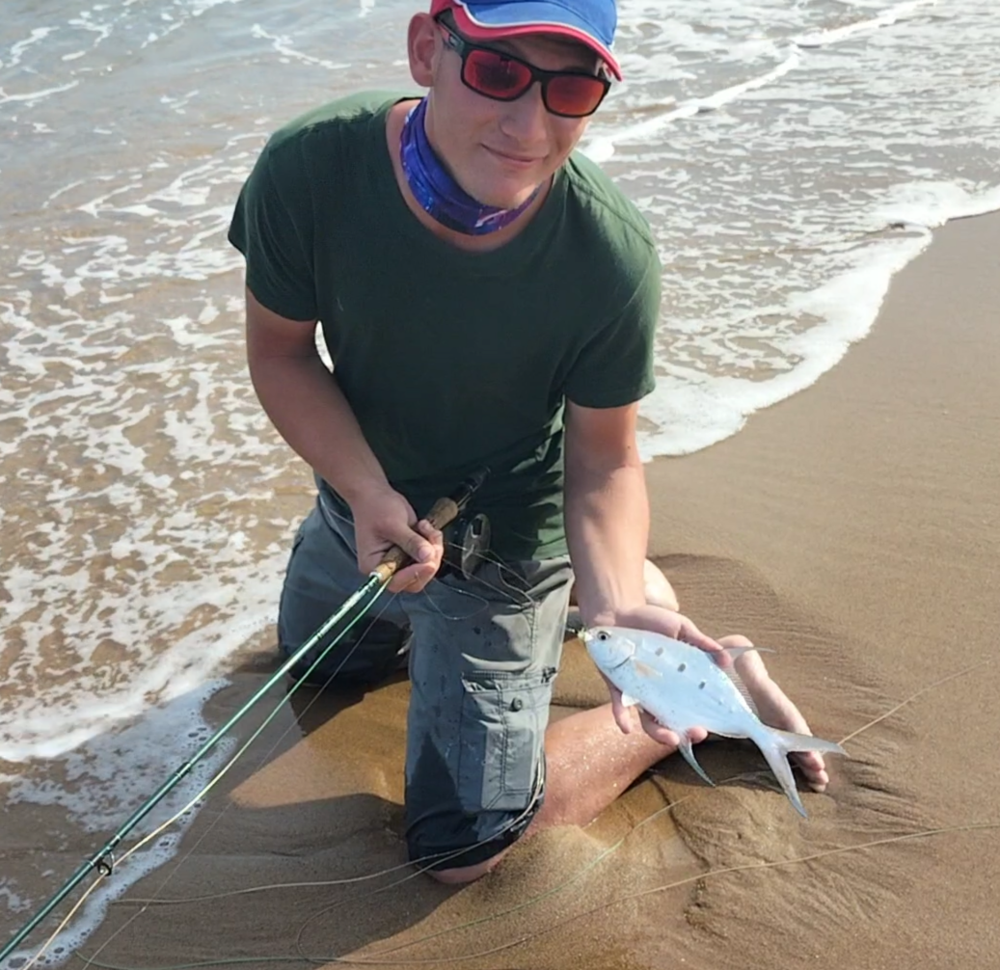

|

TJ JacobsEmail : tjnjacobs@gmail.comSouth African cell : 079 124 0676Facebook Account : TJ JacobsInstagram Account : tj__jacobsI am a young explorative person. I am fresh out of highschool yet raised in the automotive industry. My passion in life is nature, nature and nature. Motivation comes in many forms. I am motivated by change, progress and accomplishments. If given the choice of free will I would be wiring engine managements and Fly fishing on flats for fish that don't exist. |
Skills and CompetenciesAutomotive skillsBeing raised in the automotive industry I have a superior understanding of mechanical and automotive electrical work. I can fully wire a complete engine management on a car. Marine skillsI successfully obtained my Category B skippers . This means that I can pilot/captain a motorized vessel under 31ft through the surf zone and up to 40 nautical miles off shore. Within the training I attained First-aid training. This includes training in Stroke scenarios, Fatal bleeding wounds, Emergency transmission, Safety briefings and General precautions. Boating skillsI have been a deckhand on large vessels and work in a family owned vessel storage company. With this I gained experience in fiberglass work, outboard engines (two and four-stroke, inboard engines are adapted from the automotive industry), general rigging and maintenance on boats. Fishing skillsI grew up in the northern coast of South Africa. This means that Fishing was a main occurrence in my family. With the 12 years of having the privilege of owning a vessel, I have been fortunate enough to have some of the worlds best anglers teaching me from scratch. I have a vast experience in game fishing, in which I have attended many International, National, Provincial and Inter-club events. I have achieved national and provincial colors in game fishing and home colors for inter-club fishing events. People skillsWith the automotive business and vessel storage company comes one glitch in the matrix that everyone is prone to : People. I work with walk-in and mobile clients on a daily basis. I am fully able to handle clients in a professional matter even if they are being difficult or rude. I can easily merge with team members and become a part of the working gears that run a business from inside. EducationMechanicalI was raised in an automotive workshop. I can service vehicles, do any kind of maintenance, Fabricate parts for vehicles, Weld different projects (Tig, MIG, ARC) and work a lathe. I plan on writing my Trade test on Petrol and Diesel vehicles once I am financially able to pay for the test. I can wire engine managements (the vehicles ECU) and fit Software Chips. HighschoolI attended highschool at Richards bay Highschool in Richards bay, KZN. 2017-2021. Code ProjectsCapstone projectThis project consists out of three main pages and 4 item pages. It has a cart page which you can add items to and it will calculate your total depending on your delivery option and if a coupon was used. GitHub link : https://github.com/tjjacobskzn/Task5-CT2 |